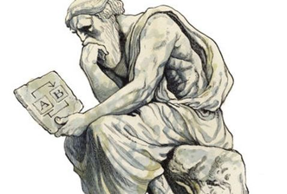

Mitología (del griego mythos que es "la historia del pueblo", y logos que es "palabra" o "discurso": "la historia hablada de un pueblo") es el estudio e interpretación de cuentos o fábulas a menudo sagrados de una cultura conocidos como mitos, o la colección de tales historias que tratan sobre diversos aspectos de la condición humana: el bien y el mal; el significado del sufrimiento; los orígenes del ser humano; el origen de los nombres de los lugares y los animales; los valores culturales y las tradiciones; el significado de la vida y la muerte; la otra vida; y los dioses o dios. Los mitos expresan las creencias y los valores sobre estos temas que tiene una cultura en concreto.
¿Como es la mitologia mexicana?
En el caso de la tradición indígena en México, se trata de acontecimientos primigenios, que ocurrieron al principio de los tiempos. Son relatos en los que se pueden encontrar los orígenes del mundo, de los astros o explicaciones de ciertas plantas o criaturas que habitan la tierra. Estas historias narran cómo en el vacío y las tinieblas, los dioses y ancestros crearon el mundo, lo ordenaron y lo nombraron. Suceden en una realidad atemporal, muy lejana a la actualidad y se han transmitido a través de la oralidad y memoria de las diversas culturas que habitan las tierras mexicanas.
 Mayores mitologias de la historia